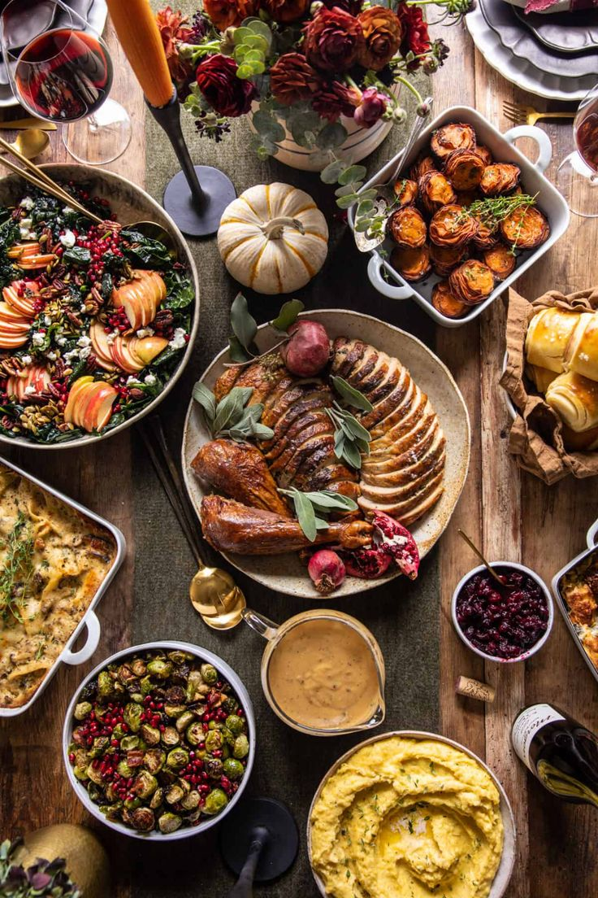

Oque você saber sobre a sutil arte de cozinhar?
Cozinhar é uma deliciosa arte que nem todo mundo tem muita facilidade para executar no dia a dia da melhor maneira. Quem não tem intimidade com a cozinha, por exemplo, pode perder muito tempo preparando pratos básicos e simples.
A boa notícia é que não é preciso ser um especialista em culinária para poder executar bons pratos com eficiência e praticidade. Separamos alguns truques de cozinha que vão fazer você se sentir como um chef de primeira na sua próxima aventura culinária!
Dicas que podem te ajudar
Organize e Limpe Durante o Preparo: mantendo a cozinha limpa enquanto cozinha, você economiza tempo no final e trabalha melhor.
Prove Enquanto Cozinha: experimentar os alimentos durante o preparo ajuda a ajustar os temperos e garante que o prato fique no ponto certo.
Use Sal com Moderação e aos Poucos: adicione sal aos poucos e vá provando; é mais fácil corrigir o sabor assim do que depois que o prato já estiver pronto.
Organize os Ingredientes (Mise en Place): separar e organizar todos os ingredientes antes de começar a cozinhar facilita o processo e evita esquecimentos.
Experimente Azeite Aromatizado: use azeites com alho, ervas ou pimenta para dar um toque especial a saladas, massas e pratos finalizados.